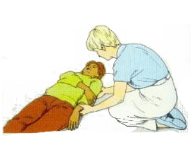

الكسور المفتوح
الكسور المغلقة
كسور عضام الترقوة
كسور العضد والساعد
كسور الساعد والرسغ
كسور اليد والاصابع
كسور الاضلاع والقص
كسور الحوض
كسور الاطراف السفلية
كسور عضم الفخذ
-
- الألم والانتفاخ هما العلامتان النموذجيتان للكسر، بسبب تضرر الأعصاب والأوعية الدموية في العظم وفي النسيج المحيط به.
- يمكن ان يكون المصاب قد شعر او سمع صوت صك العظم
- الالم في منطقة الاصابة او قربها وهو يزداد مع الحركة
- قد يشعر المصاب بصعوبة او استحالة تحريك الجزء المصاب بشكل طبيعي
- الشعور بالم في مكان الكسر اذا ضغط بلطف على المنطقة واحذر من لمس منطفة الكسر المفتوح
الاعراض والعلامات العامة
-
- ركز ورافع الذراع وسندها
- ضع قطعة من الشاش المعقم او اي ضماد مناسب فوق الجرح ثم اضغط ضغطاً كافيا لقطع النزيف
- ضع رفادات من القطن او ماشابه من المواد فوق الجرح وحوله
- ثبت الضماد والرفادات برباط مشدود
- ثبت كما في طريقة المعالجة العامة للكسور ثم ارفع الجزء المصاب اذا امكن
- اعمل على نقل المصاب الي المستشفى مع المحافضة على وضع المعالجة واحمله بواسطة النقالة اذا لزم الامر
الكسور المفتوحة
التي تنتج عنها نزيف جروح ظاهرة على مستوى الجلد بسبب العظم المتكسر و الذي يظهر خارج الجلد.
-
الكسور المغلقة
التي تكون داخلية و لا تحدث أي جرح ظاهرا على مستوى الجلد لكن بالمقابل قد تحدث نزيفا داخليا بالاضافة أن العظم فيها قد لا يتكسر كليا- نفس خطوات الكسور المفتوحة
-
كسور عضام الترقوة
حدث هذه الكسور عادة من قوة غير مباشرة تنتج عن السقوط على يد ممدودة او على نتوء الكتف اما كسور الترقوة الناجمة عن قوة مباشرة في نادرة-
الاعراض والعلامات
- نفس الاعراض العامة للكسور
- الم وضعف في مكان الاصابة يزدادان بالحركة
- يمانع المصاب في تحريك الطرف في الجهة المصابة
- يمكن ملاحظة التشوه او الشعور به في موقع الكسر
والهدف الرئيسية من الاسعاف االاولي هو تثبيت الطرف العلوي ونقل المصاب الي المستشفى*
-
المعالجة
- اجلس المصاب ثم ضع الطرف المصاب بلطف على الصدر بحيث ترتكز رؤوس الاصابع على الكتف المقابلة
- اسند الطرف بواسطة معلاق رفع
- ضع رفادات طرية بين العضد والصدر في الجهة المصابة
- تثبيت الطرف المصاب على الصدر بواسطة عصابة ذات طية عرضة فوق معلاق لرفع وجعل العقدة امام الجهة السليمة
- اعمل على نقل المصاب الي المستشفى في وضع الجلوس او المشي الا اذا كاننت هنالك مضاعفات
-
كسور العضد والساعد
-
الاعراض والعلامات
- الاعراض والعلامات العامة للكسور
- الم في مكان الكسر يزداد بالحركة
- ربما اصبح المصاب غير قادر على استعمال الطرف
- احتمال عدم القدرة على ثني او تقويم المرفق في الطرف المصاب
*الهدف تثبيت الطرف المصاب والنقل الي المستشفى
-
- كسر عضم العضد
- اجلس المصاب واسند ذراع الطرف المصاب على صدره
- اسند الطرف بواسطة معلاق للذراع
- ضع برفق رفادات طرية بين عضده وصدره
- ثبت الطرف على صدره بواسطة عصابة ذات طية عريضة فوق المعلاق والرفع يكون قريب من المرفق لليد الاخرى ويفضل الا يكون فوق مكان الكسر وجعل العقدة امام الجهة السليمة
- اعمل على نقل المصاب الى المستشفى وحعله في وضع الجلوس
-
- اجلس المصاب واسند الساعد المصاب بلطف وضعه على صدره
- ضع الساعد بلطف بين طيات رفادة لينة
- احمل الطرف بواسطة معلاق للذراع
- ثبت الطرف على صدره بواسطة عصابة ذات طية عريضة فوق المعلاق الرقع قريب من المرفق تحاشي مكان المسر واجعل العقدة امام الجهة السليمة
- اعمل على نقل المصاب الي المستشفى وحمله في وجع الجلوس
كسور الساعد والرسغ
-
-
*في حالة عدم التمكن من ثني المرفق او كان المصاب مستلقيا
- اضجع المريض وسند الطرف المصاب على جذعه ولا تحاول ثني المرفق بالقوة 
- ضع كمية كافية من الرفادات الينة بين الطرف المصاب والجذع للتتاكد من ان وضع الرباط لن يزحزح العضام المكسورة
- ثبت الطرف المصاب الى جسم المريض بواسطة ثلاثة عصائب ذات طيات عريضة احدها حول المعصم والوركين والثاني حول العضد والجذع والثالث حول الساعد والجذع عند المرفق ويفضل الا تكون العصائب فوق الجهة المكسورة وانت تكون العقد في الجهة السليمة
- اعمل على نقل المريض الى المستشفى واحمله على نقالة مع المحافضة على وضع المعالجة
-
كسور اليد والاصابع
-
الهدف
تثبيت اليد المصابة واعمل على نقل المصاب على المستشفى
- احمِ اليد المصابة بوضعها بين طيات رفادة لينة
- اسند الطرف المصاب بلطف بواسطة معلاق رفع
- ثبت الطرف على الصدر المصاب بواسطة عصابة ذات طية عريضة فوق المعلاق واعقد العصابة فوق الجهة السليمة
- اعمل على نقل المصاب الي المستشفى واحمله في وضع الجلوس اذا امكن
-
كسور الاضلاع والقص
-
الاعراض والعلامات
- الاعراض نفسها للكسور
- احتمال وجود اعراض نزف داخلي
- قد يكون هناك جرح مفتوح في جدار الصدر فوق الكسر(يسمى جرح ماص)
-
المعالجة
- اسند الطرف في الجهة المصابة بواسطة معلاق للذراع
- اعمل على نقله الى المستشفى اما في وضع الجلوس او مشيا على الاقدام الا اذا كانت هنالك مضاعفات
-
- عالج مباشرة اي جرح ماص
- اضجع المصاب في وضع نصف جلوس بحيث يكون رأسه وكتفاه مدارة وجسمه يميل الي الجهة المصابة ,اسنده بوضع بطانية مطوية علة طولها وراء ضهره
- اسند الطرف في الجاهة المصابة بواسطة معلاق رفع
- اذا كان المصاب فااقداً وعيه او اصبح تنفسه صعبا ضعهة في وضع الافاقة (اذهب الى اهداف الاسعاف الاولي) على ان يكون الجهة السليمة هي العليا
- اعمل على نقله الي المستشفى واحمله على نقالة مع المحافظة على وضع المعالجة
*في حالة الكسر ذي مضاعفات
المعالجة
-
كسور الحوض
- الاعراض والعلامات
- الاعراض والعلامات العامة للكسور
- الم وضعف في ناحية الوركين او الضهر بزدادان عندما يتحرك المصاب
- لا يستطيع المصاب المشي ولا حتى الوقوف بالرغم من المظهر السليم للساقين
- اذا تبول المصاب قد يكون البول مدمّى
- ارقد المصاب على ظهره وجعل ساقيه مستقيمتين وذا لاحظت ان ثني الركبة يزيد من راحته فاثنهما وضع بطانية مطوية تحتهما
- اذا كان المسعف الاولي هو المسؤول عن نقل المصاب بادر بلطف الى وضع عصابتين بطيتين عريضتين حول حوضه على ان تبدأ وتجعل العقدة في الوسط ان هذا الترتيب ليس ضروريا دوما ولا لزوم لتطبيقه اذا حدث الماً شديداً
- ضع رفادات لينة كافية بين ركبتيه وكاحله
- ضع رباطا بشكل رقم ثمانية 8 حول كاحليه وقدمه وعصابة ذات طية عريضة حول ركبته
- للتخفيف من شدة الصدمة غطه ببطانية
- اعمل على نقله الى المستشفى ,احمله على نقالة مع المحافضة على وضع المعالجة
*الهدف تأمين الراحة للمصاب ونقله الى المستشفى
-
كسور الاطراف السفلية
-
المعالجة
- ارقد المصاب ,وركز الطرف واسنده برفق بإمساكه من المفاصل قبل وبعد مكان الاصابة .اطلب من احد المارة القيام بهذا العمل اذا امكن ذالك
- اذا ادعت الحاجة جرد الساق المصابة (مزق الملابس) ,وفحصه لكي تحدد نوع الكسر (مغلق ام مفتوح )
- امسك بالكاحل والقدم واسحب بلطف وعناية على مستوى المحور الطولاني للطرف سعيا وراء ايصاله الى وضع مستقيم
- اذا كان وصول سيارة الاسعاف وشيكا ثابر على سند الطرف الى ان تصل
- اما اذا كانت ستتأخر سيارة الاسعاف ,بينما تستمر في سند الطرف من جهة الكاحل استفد من الفراغات الطبيعية وضع عصائب ذات طيات عريضة بلطف تحت ساقي المصاب عند الوركين و فوق الكسر وتحته وعصابة ذات طية ضيقة عند الكاحلين
- قرب الطرف السليم بلطف الى جانت الطرف المصاب
- ضع كمية كافية من الرفادات بين الساقين لتغطية النتوءات العظمية في الركبتين والكاحلين واضف المزيد من الرفادات للتاكد من ان وضع المصاب لن يزحزح العضام المكسورة
- اعقد العصابة على كاحلي المصاب بشكل رقم 8 ثم العصائب الاخرى حول ركبته وفوق الكسر وتحته في الساق واضغط ضغطا لطيفا اثناء وضع العصائب لكي تضمن استقرارها
- *اذا كان الكسر قريبا من الكاحل لا تضع العصابة رقم 8 تحت السر لكي لا ياتي التضميد فوق الكسر

-
كسور عضم الفخذ
- الاعراض
- الاعرض والعلامات العامة للكسور
-
المعاجلة
- ارقد المصاب ,وركز الطرف واسنده برفق بإمساكه من المفاصل قبل وبعد مكان الاصابة
- اذا لزم الامر اكشف الساق بعناية لتحديد نوع الكسر (مفتوح ام مغلق)
- جر بلطف وانت ممسك بركتبه وبينما يستمر الجر والاسناد على ركبته بادر الى تقويم الساق برفق وحول الرجل المصابة الى وضع مستقيم بالاستمرار في الجر من الكاحل
- اذا كان وصول سيارة الاسعاف بعيداً , بينما يكون طرف المصاب مسنوداً من الكاحل استعمل الفراغات الطبيعية لكي تضع برفق عصائب ذات طيات عريضة تحت ساقي المصاب على مستوى الركبتين وفوق الكسر وتحته باضافة الى عصابة ذات طيات ضيقة عند الكاحلين
- قرب بلطف الطرف السليم الى جانب الطرف المصاب
- ضع كمية كافية من الرفادات الطرية بين ساقيه وذالك لتغطية النتوءات العظمية في الركبتين والكاحلين
- اعقد العصابة على شكل رقم 8 حول الكاحلين والقدمين واعقد الاربطة الاخرى حول ركبته و وفوق الكسر وتجته على فخذه